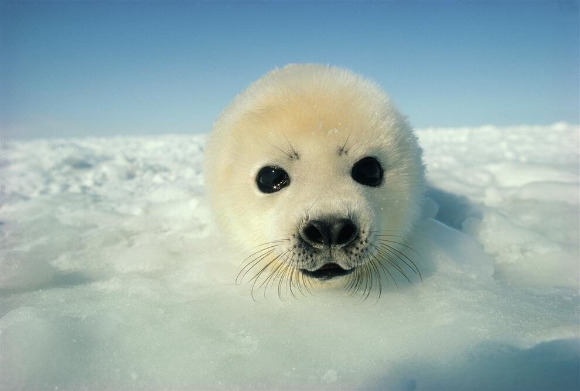

🛶Архангельская Область
-Стоимость одного тура от 28 тыс. рублей
Архангельск — культурно-историческая столица Русского Севера. В городе сохранилось много старинных зданий, работают музеи, ежегодно проводятся выставки и фестивали. Архангельск именовали «Столицей Севера», «Воротами Арктики», а сейчас этот город - первый морской порт России - официально отнесен к сухопутной Арктической территории России. Город имеет множество привлекательных черт – самобытность, сохранение традиций, но при этом стремление к открытию нового. Туристов сюда привлекает возможность проникнуться духом русской старины, познакомиться с древними традициями, обычаями, кухней, ремеслами и промыслами.
У туристов пользуются популярностью морские поездки на Соловецкие острова, путешествия на байдарках, рафтинг по многочисленным архангельским рекам, а также зимние туры на снегоходах. Благодаря расположенным в Архангельской области национальным паркам и многочисленным памятникам природы экотуризм будет развиваться здесь и в дальнейшем.
Туристы также могут посетить национальный парк «Русская Арктика», основанный в 2009 году. Здесь посетители могут увидеть лежбище моржей на острове Аполлонова, осмотреть дощатый Дом Эйры, построенный в 1881 году на острове Белла, полюбоваться первой столицей советского архипелага — бухтой Тихой, увидеть птичье «царство» на скале Рубини, прогуляться по заповеднику каменных шаров на острове Чампа.


🤔 Какие туры есть?
Большинство туристов сюда приезжает, чтобы познакомиться или узнать что-то новое из истории России. Самыми интересными и популярными турами в Архангельской области считаются поездка на Соловецкие острова и морские прогулки по Белому морю.
Ниже представлен сайт одного туроператора, который предлагает 12 интересных и впечатляющих туров по Архангельской области. В их числе есть как лыжные прогулки, так и наблюдения за бельками, белухами и другими обитателями Белого моря.
Russia Discovery
Хороший сайт, где можно найти подробную информацию о любом туристическом маршруте и ценах на него. Это сайт Russia Discovery. Он специализируется на птушествиях по России и организовывает туристические поездки по самым разным направлениям.
На сайте можно ознакомиться с программами путешествий, посмотреть их стоимость и найти другие интересные направления для ваших будущих путешествий.

🔎 Полезная информация
Если вы собрались посетить Архангельскую область в ближайшее время, то для вашего удобства на этой странице вы можете посмотреть прогноз погоды в Архангельске.

Также, ниже прикреплена карта, на которой отмечены самые популярные туристические места Республики Карелии.